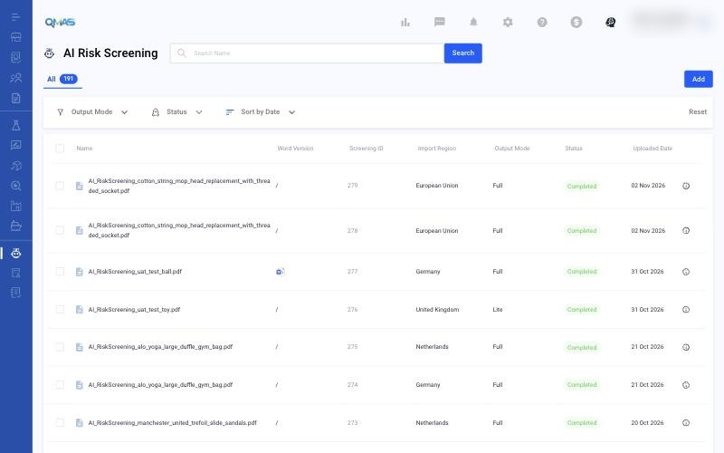
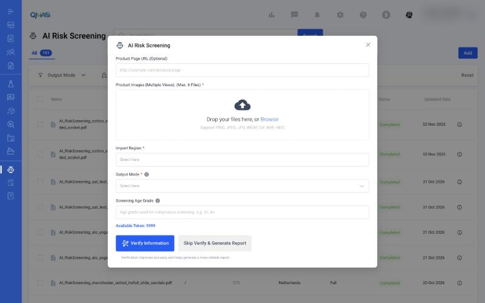
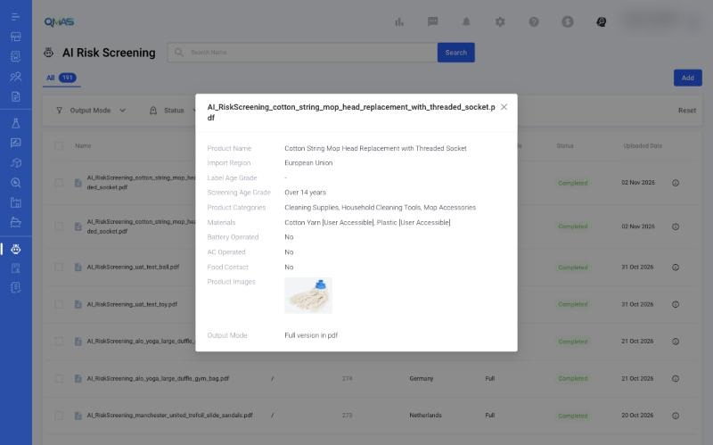

AI Insight — Run an AI Risk Screening
Upload product photos and let AI identify compliance risks and requirements for your import region. You get a compliance guideline report (PDF).
Overview
- Open AI Risk Screening from the left menu (or from a product profile) and click Add.
- Upload up to 6 product photos and choose the Import Region and Output Mode.
- Click Verify Information (recommended) or Skip Verify & Generate Report.
- When the status is Completed, open the report from the list.
Step-by-step
1. Open AI Risk Screening
In the left menu, open AI Risk Screening. The list shows every screening with its import region, output mode (Full or Lite), status and upload date. Click Add.

You can also start from a product: open the product profile, choose AI Risk Screening in its left menu, then click Add.

2. Fill in the screening
- Product Page URL (optional): a link to the product page.
- Product Images (required): up to 6 photos from different views. PNG, JPEG, JPG, WEBP, GIF, AVIF or HEIC.
- Import Region (required): where the product will be sold.
- Output Mode (required): Full or Lite report.
- Screening Age Grade (optional): the age grade to screen against, for example 3+ or 8+.
Available Token shows your balance.

3. Verify and generate
Click Verify Information (recommended: verification improves accuracy and gives a more reliable report), or Skip Verify & Generate Report to go straight to the report.
The new screening appears in the list. When its status is Completed, the report is ready. Click the ⓘ icon to see the screening details.

Tips
FAQ
- How do I run an AI risk screening / AI Insight?
- Go to AI Risk Screening (https://qmas.icw.io/ai-risk-screening), click Add, upload product photos, choose Import Region and Output Mode, then click Verify Information or Skip Verify & Generate Report.
- Where do I see my token balance?
- In the AI Risk Screening pop-up, under Available Token.
- What is the difference between Full and Lite?
- They are the two report output modes. Choose one in Output Mode when you add a screening.